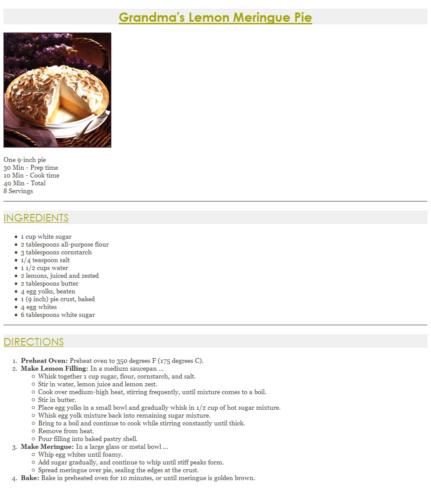

| HTML5 | Intro CSS | CSS/H5: Ref | CSS/H5: Tutor | JS: Ref | JS: Tutor | Assignments |
Assignment 3 (lab3.html)
You will create several files related to a recipe web site for a fictional pie company named Granny's Pies. You need to have the following files:
•lab3.html
•lab3pie.html
•lab3.css (optional CSS external style sheet file)
The first part of your task is to create a front page for this web site, stored in a file named lab3.html. Your front page must contain a link to lab3pie.html. Be creative!
The second (and more substantial) part of the assignment is to recreate a specific web page describing a recipe for lemon meringue pie, stored in a file named lab3pie.html. Unlike lab3.html, this page is rigidly specified and must closely match the appearance specified in this document (clickable thumbnail):
